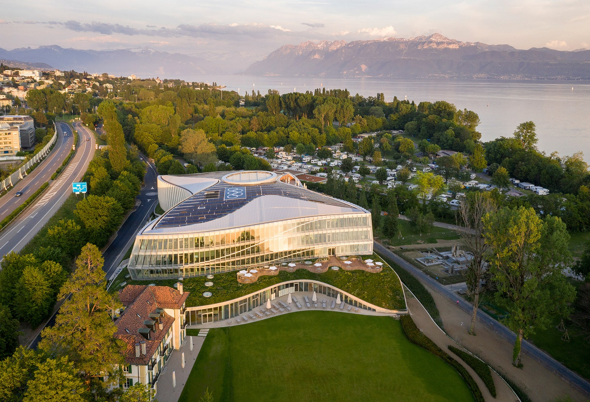

Титульный лист действующей Олимпийской Хартии
Принципы, правила и положения Олимпийских игр определены Олимпийской хартией, основы которой утверждены Международным спортивным конгрессом в Париже в 1894 г., принявшим по предложению французского педагога и общественного деятеля Пьера де Кубертена решение об организации Игр по образцу античных и о создании Международного олимпийского комитета (МОК).
Штаб-квартира МОК в Лозанне, Швейцария
Согласно хартии, Олимпийские игры «…объединяют спортсменов всех стран в честных и равноправных соревнованиях. По отношению к странам и отдельным лицам не допускается никакой дискриминации по расовым, религиозным или политическим мотивам…». Помимо олимпийских видов спорта, организационный комитет имеет право по своему выбору включить в программу показательные соревнования по 1-2 видам спорта, не признанным МОК. Игры Олимпиад, известные также как летние Олимпийские игры, проводятся в первый год 4-летнего (Олимпийского) цикла. Счёт олимпиадам ведётся с 1896 года, когда состоялись первые Олимпийские игры (I Олимпиада — 1896-99). Олимпиада получает свой номер и в тех случаях, когда игры не проводятся (например, VI — в 1916-19, XII-1940-43, XIII — 1944-47). Термин «Олимпиада» официально означает четырёхлетний цикл, однако неофициально часто используется вместо названия «Олимпийские игры». В тех же годах, что и Игры Олимпиад, с 1924 года проводились зимние Олимпийские игры (официально — Олимпийские зимние игры), которые имеют свою нумерацию. В нумерации зимних Олимпийских игр пропущенные игры не учитывают (за IV играми 1936 года последовали V игры 1948). Начиная с 1994 года сроки проведения зимних Олимпийских игр были сдвинуты на 2 года относительно летних. Место проведения Олимпиады выбирает МОК, право их организации предоставляется городу, а не стране. Продолжительность Игр в среднем 16-18 дней.
С учётом климатических особенностей разных стран, летние Игры могут быть проведены не только в «летние месяцы». Так XXVII летние Олимпийские игры 2000 года в Сиднее (Австралия), в силу расположения Австралии в Южном полушарии, где лето начинается в декабре, были проведены в сентябре, то есть весной. Также XXXI летние Олимпийские игры 2016 года в Рио-де-Жанейро проходили в Бразилии в августе, зимнем месяце в Южном полушарии. Это были первые Олимпийские игры в Южной Америке. С 1932 года город-организатор строит «Олимпийскую деревню» — комплекс жилых помещений для участников игр.
Церемония закрытия XXVII Летних Олимпийских игр в Сиднее, Австралия.
1 октября 2000 года.
Распространением олимпизма и руководством олимпийского движения занимается Международный олимпийский комитет. Деятельностью МОК руководит президент, в настоящее время эту должность занимает Томас Бах. Основополагающие принципы олимпизма содержит Олимпийская хартия. Она регламентирует организацию, мероприятия и деятельность олимпийского движения и определяет условия проведения Олимпийских игр. Тремя главными составляющими олимпийского движения являются: Международный олимпийский комитет (МОК), международные спортивные федерации (МФ) и национальные олимпийские комитеты (НОК). В него входят также организационные комитеты Олимпийских игр (ОКОИ), национальные ассоциации, клубы и лица, являющиеся членами МФ и НОК, в особенности спортсмены, соблюдение интересов которых составляет основной элемент деятельности олимпийского движения, судьи, рефери, тренеры и другие спортивные официальные лица и технические специалисты, а также другие организации и учреждения, признанные МОК. Визуальным послом олимпизма для миллиардов людей является олимпийский символ.
Томас Бах - нынешний Президент Международного олимпийского комитета
Для соблюдения олимпийских идеалов и благородных принципов соперничества на Олимпийских играх и Олимпийских зимних играх в 1968 году МОК и международными спортивными федерациями учреждена процедура допинг-контроля, которую осуществляют специальные антидопинговые комиссии. С 1976 года призеры Олимпийских игр проходят специальные допинг-тесты; в случае уличения спортсмена в принятии допинга он дисквалифицируется и лишается наград. Для борьбы с допингом в 1999 году при поддержке МОК было учреждено Всемирное антидопинговое агентство (ВАДА). С 1974 года за особые заслуги перед олимпийским движением вручается Олимпийский орден.